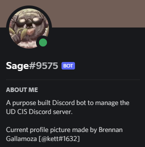

Java was the first language I learned, way back in 2015 when I was in middle school, having used numerous books I'd borrow from the library. From a simple "Hello World!" program, to terminal-based games demonstrating object-oriented programming concepts, to GUI utilities and games using Swing, my experience with Java is the foundation of the experience I have today. Java is a weird language for sure, but it remains an important part of my journey as a developer.
About
Hello, the name's Simon. I'm a sophomore computer science major at the University of Delaware with a strong interest in software and web development. Besides programming, I have a wide array of other interests, all detailed below!
Languages
I started development as a hobby in 2015, and since then, I've learned many different languages, whether through my own learning, high school/college classes, or work experience. Click on the dropdowns to view more about the languages I've used so far.
Python was the second language I learned, having started writing
programs in it in 2016 using a college-level textbook (I was 14 at
the time!). I learned the syntax and made some basic GUI apps using
a library provided with the book, and eventually I made utilities of
varying scales (a script that finds lengthy lines in text files, a
random list selector...) and even a couple of games using the Pygame
and Designer.py libraries. More recently, I started working with
PIL, a powerful image-manipulation library for the language, having
created dynamic graphs and visualizations of interactions with
physical devices.
Unfortunately, thus far, I've not done
as much as Python as I'd like to have done. But hopefully, plenty of
opportunities will arise with my college career - and of course, I'm
willing to learn more about it on my own!
C#, personally, is my favorite language, and the one I am most
comfortable with. With certainty, I can say it's a million times
better than Java!
I started programming in it around
2018. Most of my projects in this language are GUI applications,
including a desktop journal keeper, study helper that allows users
to create their own flash card sets and quiz themselves on them,
custom-built, sophisticated game content installers, and
applications that display local CSV game data in numerous, organized
formats.
Additionally, I've worked with the
Unity 3D game engine, which uses C# for scripting, mainly in the
areas of just component scripting and UI design.
What more can I say? These two languages are what make up the majority of this website. Having started with basic HTML elements as well as learning tidbits of CSS at a time (also throwing in a very small amount of JavaScript), only in the past couple of years have I realized how powerful those three languages combined are. That realization helped stimulate my interest in full-stack web development, but that's a story for the JavaScript panel below.
One of the more recent languages I've learned that have proved very valuable to my career as a developer. I taught myself JS at first, having made numerous projects on different mediums, from web-based 3D games to Discord bots for smaller servers. For a little while, I migrated to TypeScript (a subset of this language, more detail below) before returning to JavaScript to learn the React web framework. Initially, I took a disliking to it, but the experience I gained in it from a summer internship was absolutely invaluable - I've since grown a liking towards function/state-based React. Since then, I've made frontend and full-stack web applications using the framework.
When I was a college freshman, some friends introduced me to TypeScript, a subset of JavaScript that contains strict typing and principles more closely related to object-oriented programming, along many other changes. Initially, I disliked it, but as I worked collaboratively with other undergrads on a bot for the University of Delaware's official Computer Science Discord server over a winter semester, I gained a strong liking for it - a preference for it over vanilla JS, even! I've since used it extensively on web scrapers and other Discord bots, such as one that tracks the SEPTA trains I take to and from college, and one that translates user-inputted strings and even previously-sent text messages.
I initially learned C++ in 2016, but dropped it after finding it too complicated. I revisited it in my sophomore year of college, primarily for a Data Structures class, and I since gained a strong liking for it. Simply put, it's flexible, powerful, fast, and dynamic. So far I've learned a lot about managing memory and data, including data structures (trees and hashmaps) and sorting algorithms, all of which crucial parts of every area of software development.
C is an interesting language for sure. I learned it through a freshman-year systems programming college class, and I'll admit - it was a lot easier to learn than I thought it would be! Many of the projects I worked on in this language interface with my Raspberry Pi, displaying different things on a sense hat.
I bet you weren't expecting this to appear on this list.
I
learned the basics of this language through a sophomore-year machine
organization class at college, including arithmetic, bit-shifting
operations, branching/loops, managing the stack, and arrays.
Assembly
is far from my favorite language to work with. However, I haven't
ruled out low-level programming as an interest of mine yet, so who
knows? It might come in handy later :)
Other Interests
Of course, computer science is not the only interest or hobby of mine...
I'm super into simulation, strategy, platformer, RPG, and roguelike games. My favorite games include Risk of Rain 2, Civilization V, Euro Truck Simulator 2, Team Fortress 2, and most Nintendo games, among many others.
I'm a massive transport and train nerd. You can ask me a question about American, British, or German trains, mainly regarding train types, timetables, infrastructure, and I'd probably be able to give you a quick answer.
I'm a hobbyist photographer, with the main subject of my photos being trains! How surprising. Eventually, I hope to delve into more general areas of photography, such as nature. You can view my photos on Flickr.
Both playing and listening to - I have 10 years of experience with the trombone, having participated in wind ensemble, and jazz/marching band in my grade school years. My favorite genres of music to listen to are alt/electronic rock.
Ich kann ein bisse Deutsch sprechen. Ich lerne Deutsch durch
Duolingo und meine Universität weil ich Deutschland besuchen möchte!
Deutsch ist sehr toll!
I'm also interested in learning
about German culture. I was exposed to it in an introductory German
class at college, and it is truly fascinating.
Canoeing/kayaking, biking, watching TV (my top shows are Let's Make a Deal and Futurama), mini-golfing, hiking, roller coasters, and reading about history.
Projects
Below are the major projects I've worked on, most of them independently. The collapsible below contains many, more minor things I've worked on. Click on the pictures to learn more about each project; links to their source on GitHub are also available.
|

Sage |
×
Written in JavaScript + React/Express and TypeScript, this is a full-stack web application that displays delay data (average/mean/extremities) of SEPTA regional rail services. The app has a backend that connects to a database, a frontend that displays the information based on user queries, and a supplemental script that scrapes the SEPTA API every 15 minutes, posting delay data for each SEPTA service to the database. SEPTA Delay Statistics |
×
Originally created in 2021, this is a Discord bot that fetches from the SEPTA API every 2 minutes and returns delays, last recorded location, and train consist information for user-inputted train numbers in a specified text channel. It also regularly updates users on alerts/advisories for regional rail lines. SEPTA Delay History |

×
A Windows Forms application that allows the user to write journal entries, save them locally, and view them later. Also has many other features, including entry tagging/searching (by keyword or tag), and text formatting using a tag system. Journal Manager |
×
A Windows Forms application that allows the user to create sets of flash cards for studying, save them on their system, and review them in another window, being able to shuffle the card order at any time. Flash Card Maker |

×
Based on known grades/weights and the weight of an unknown grade, this Python script calculates the unknown grade needed to get a target final grade, as well as the highest/lowest possible grades that can be achieved, and a programatically-generated graph that shows the final grade that will be achieved based on the value of the unknown grade. Final Grade Calculator |